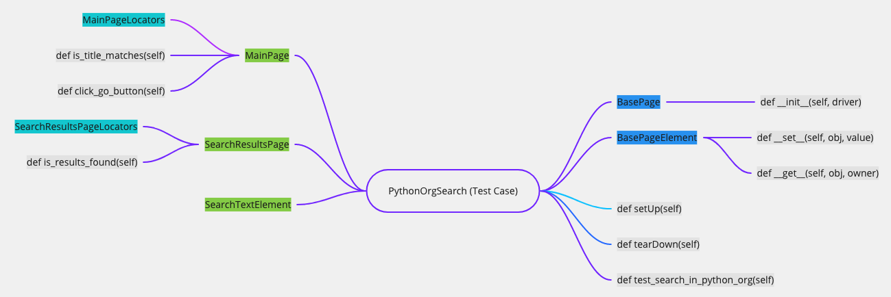

POM (Page Object Model)
POM (Page Object Model) 是一種設計模式。
POM 的好處，如下所示：
- 易於閱讀的測試案例
- 建立在多個測試案例之間共享，且可重複使用的程式碼。
- 減少重複程式碼的數量
- 如果 UI 發生改變，則僅需在一個位置進行更改程式碼。
設計模式（design pattern）: 在軟體工程中，設計模式是對軟體設計中普遍存在的各種問題，所提出的解決方案。
設計思維
- 然後再想測試步驟
- 然後想要切分成幾個 Page
- 最後在抽出 element 跟 locators 的細節
測試案例 (Test case)

這是一個測試案例，是執行測試的進入點，它在 Python 官網上搜尋一個關鍵字，並取得搜尋結果。
# demo.py
import unittest
from selenium import webdriver
import page
class PythonOrgSearch(unittest.TestCase):
def setUp(self):
self.driver = webdriver.Chrome("../chromedriver")
self.driver.get("http://www.python.org")
def test_search_in_python_org(self):
main_page = page.MainPage(self.driver)
assert main_page.is_title_matches(), "python.org title doesn't match."
main_page.search_text_element = "pycon"
main_page.click_go_button()
search_results_page = page.SearchResultsPage(self.driver)
assert search_results_page.is_results_found(), "No results found."
def tearDown(self):
self.driver.close()
if __name__ == "__main__":
unittest.main()
頁面物件類別 (Page Object Class)
# page.py
from element import BasePageElement
from locators import MainPageLocators
class SearchTextElement(BasePageElement):
locator = 'q'
class BasePage(object):
def __init__(self, driver):
self.driver = driver
class MainPage(BasePage):
search_text_element = SearchTextElement()
def is_title_matches(self):
return "Python" in self.driver.title
def click_go_button(self):
element = self.driver.find_element(*MainPageLocators.GO_BUTTON)
element.click()
class SearchResultsPage(BasePage):
def is_results_found(self):
return "No results found." not in self.driver.page_source
頁面元素
# element.py
from selenium.webdriver.support.ui import WebDriverWait
class BasePageElement(object):
def __set__(self, obj, value):
driver = obj.driver
WebDriverWait(driver, 100).until(
lambda driver: driver.find_element_by_name(self.locator))
driver.find_element_by_name(self.locator).clear()
driver.find_element_by_name(self.locator).send_keys(value)
def __get__(self, obj, owner):
driver = obj.driver
WebDriverWait(driver, 100).until(
lambda driver: driver.find_element_by_name(self.locator))
element = driver.find_element_by_name(self.locator)
return element.get_attribute("value")
定位 (Locators)
# locators.py
from selenium.webdriver.common.by import By
class MainPageLocators(object):
GO_BUTTON = (By.ID, 'submit')
class SearchResultsPageLocators(object):
pass